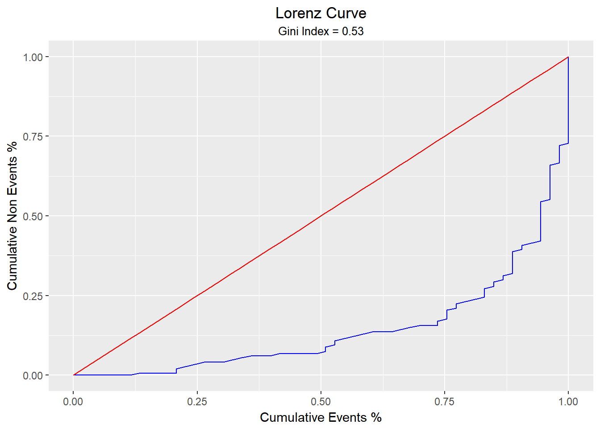

blorr: Tools for building binary logistic regression models
Author: Aravind Hebbali
License: MIT


Tools designed to make it easier for users, particularly beginner/intermediate R users to build logistic regression models. Includes comprehensive regression output, variable selection procedures, model validation techniques and a ‘shiny’ app for interactive model building.
Installation
You can install blorr from github with:
# install.packages("devtools")
devtools::install_github("rsquaredacademy/blorr")Shiny App
Use blr_launch_app() to explore the package using a shiny app.
Vignettes
Quick Overview
library(blorr)
library(magrittr)Bivariate Analysis
blr_bivariate_analysis(hsb2, honcomp, female, prog, race, schtyp)
#> Bivariate Analysis
#> ---------------------------------------------------------------------
#> Variable Information Value LR Chi Square LR DF LR p-value
#> ---------------------------------------------------------------------
#> female 0.10 3.9350 1 0.0473
#> prog 0.43 16.1450 2 3e-04
#> race 0.33 11.3694 3 0.0099
#> schtyp 0.00 0.0445 1 0.8330
#> ---------------------------------------------------------------------Weight of Evidence & Information Value
blr_woe_iv(hsb2, prog, honcomp)
#> Weight of Evidence
#> -------------------------------------------------------------------------
#> levels 0s_count 1s_count 0s_dist 1s_dist woe iv
#> -------------------------------------------------------------------------
#> 1 38 7 0.26 0.13 0.67 0.08
#> 2 65 40 0.44 0.75 -0.53 0.17
#> 3 44 6 0.30 0.11 0.97 0.18
#> -------------------------------------------------------------------------
#>
#> Information Value
#> -----------------------------
#> Variable Information Value
#> -----------------------------
#> prog 0.4329
#> -----------------------------Model
# create model using glm
model <- glm(honcomp ~ female + read + science, data = hsb2,
family = binomial(link = 'logit'))Regression Output
blr_regress(model)
#> - Creating model overview.
#> - Creating response profile.
#> - Extracting maximum likelihood estimates.
#> - Estimating concordant and discordant pairs.
#> Model Overview
#> ------------------------------------------------------------------------
#> Data Set Resp Var Obs. Df. Model Df. Residual Convergence
#> ------------------------------------------------------------------------
#> data honcomp 200 199 196 TRUE
#> ------------------------------------------------------------------------
#>
#> Response Summary
#> --------------------------------------------------------
#> Outcome Frequency Outcome Frequency
#> --------------------------------------------------------
#> 0 147 1 53
#> --------------------------------------------------------
#>
#> Maximum Likelihood Estimates
#> -----------------------------------------------------------------
#> Parameter DF Estimate Std. Error z value Pr(>|z|)
#> -----------------------------------------------------------------
#> (Intercept) 1 -12.7772 1.9755 -6.4677 0.0000
#> female1 1 1.4825 0.4474 3.3139 9e-04
#> read 1 0.1035 0.0258 4.0186 1e-04
#> science 1 0.0948 0.0305 3.1129 0.0019
#> -----------------------------------------------------------------
#>
#> Association of Predicted Probabilities and Observed Responses
#> ---------------------------------------------------------------
#> % Concordant 0.8561 Somers' D 0.7147
#> % Discordant 0.1425 Gamma 0.7136
#> % Tied 0.0014 Tau-a 0.2794
#> Pairs 7791 c 0.8568
#> ---------------------------------------------------------------Model Fit Statistics
blr_model_fit_stats(model)
#> Model Fit Statistics
#> ---------------------------------------------------------------------------------
#> Log-Lik Intercept Only: -115.644 Log-Lik Full Model: -80.118
#> Deviance(196): 160.236 LR(3): 71.052
#> Prob > LR: 0.000
#> MCFadden's R2 0.307 McFadden's Adj R2: 0.273
#> ML (Cox-Snell) R2: 0.299 Cragg-Uhler(Nagelkerke) R2: 0.436
#> McKelvey & Zavoina's R2: 0.518 Efron's R2: 0.330
#> Count R2: 0.810 Adj Count R2: 0.283
#> BIC: 181.430 AIC: 168.236
#> ---------------------------------------------------------------------------------Confusion Matrix
blr_confusion_matrix(model)
#> Confusion Matrix and Statistics
#>
#> Reference
#> Prediction 0 1
#> 0 135 26
#> 1 12 27
#>
#> Accuracy : 0.81
#> 95% CI : (0.7487, 0.8619)
#> No Information Rate : 0.735
#> P-Value [Acc > NIR] : 0.008453
#>
#> Kappa : 0.4673
#> Mcnemar's Test P-Value : 0.034955
#>
#> Sensitivity : 0.5094
#> Specificity : 0.9184
#> Pos Pred Value : 0.6923
#> Neg Pred Value : 0.8385
#> Prevalence : 0.2650
#> Detection Rate : 0.1350
#> Detection Prevalence : 0.1950
#> Balanced Accuracy : 0.7139
#>
#> 'Positive' Class : 1
#> Hosmer Lemeshow Test
blr_test_hosmer_lemeshow(model)
#> Partition for the Hosmer & Lemeshow Test
#> --------------------------------------------------------------
#> def = 1 def = 0
#> Group Total Observed Expected Observed Expected
#> --------------------------------------------------------------
#> 1 20 0 0.16 20 19.84
#> 2 20 0 0.53 20 19.47
#> 3 20 2 0.99 18 19.01
#> 4 20 1 1.64 19 18.36
#> 5 21 3 2.72 18 18.28
#> 6 19 3 4.05 16 14.95
#> 7 20 7 6.50 13 13.50
#> 8 20 10 8.90 10 11.10
#> 9 20 13 11.49 7 8.51
#> 10 20 14 16.02 6 3.98
#> --------------------------------------------------------------
#>
#> Goodness of Fit Test
#> ------------------------------
#> Chi-Square DF Pr > ChiSq
#> ------------------------------
#> 4.4998 8 0.8095
#> ------------------------------Gains Table
blr_gains_table(model)
#> # A tibble: 10 x 12
#> decile total `1` `0` ks tp tn fp fn sensitivity
#> <dbl> <int> <int> <int> <dbl> <int> <int> <int> <int> <dbl>
#> 1 1.00 20 14 6 22.3 14 141 6 39 26.4
#> 2 2.00 20 13 7 42.1 27 134 13 26 50.9
#> 3 3.00 20 10 10 54.2 37 124 23 16 69.8
#> 4 4.00 20 7 13 58.5 44 111 36 9 83.0
#> 5 5.00 20 3 17 52.6 47 94 53 6 88.7
#> 6 6.00 20 3 17 46.7 50 77 70 3 94.3
#> 7 7.00 20 1 19 35.7 51 58 89 2 96.2
#> 8 8.00 20 2 18 27.2 53 40 107 0 100
#> 9 9.00 20 0 20 13.6 53 20 127 0 100
#> 10 10.0 20 0 20 0 53 0 147 0 100
#> specificity accuracy
#> <dbl> <dbl>
#> 1 95.9 77.5
#> 2 91.2 80.5
#> 3 84.4 80.5
#> 4 75.5 77.5
#> 5 63.9 70.5
#> 6 52.4 63.5
#> 7 39.5 54.5
#> 8 27.2 46.5
#> 9 13.6 36.5
#> 10 0 26.5
Lorenz Curve
blr_lorenz_curve(model)
Please note that this project is released with a Contributor Code of Conduct. By participating in this project you agree to abide by its terms.